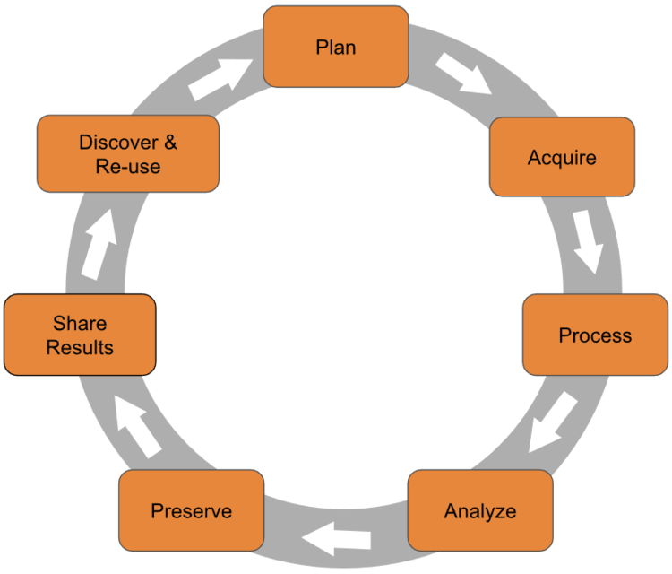
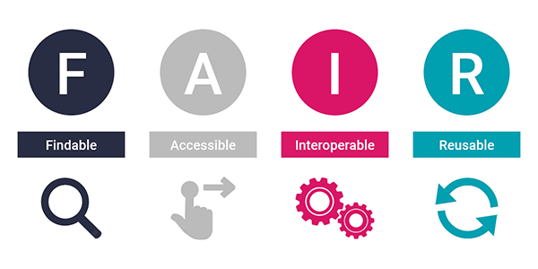

All in One View
Content from Why Does Research Data Management Matter?
Last updated on 2026-03-24 | Edit this page
Estimated time: 15 minutes
Overview
Questions
- What is research data and why should I care about managing it?
- What can go wrong if I don’t manage my data well?
- What is the reproducibility crisis and how does it relate to data management?
Objectives
- Define “research data” and “research data management”
- Explain why good data management matters for you, your research group, and the wider community
- Recognise the consequences of poor data management
Part 1: Research Data Management Principles
Episodes 1–5 cover the general principles of research data management that apply across all disciplines: what research data is, how to plan for it, how to make it FAIR, and how to store, share, and licence it. After the break, Part 2 applies these principles to the specific challenges of chemistry research.
What Is Research Data?
When you hear “research data”, you might think of a spreadsheet of results or a graph. In practice, research data includes everything generated or collected during a research project that is needed to validate your findings. In chemistry, this might include:
- Raw instrument output (NMR FIDs, mass spectra, IR interferograms, diffraction patterns)
- Processed spectra and images
- Lab notebook entries (paper or electronic)
- Synthesis protocols and reaction conditions
- Computational input and output files (DFT calculations, molecular dynamics trajectories)
- Code and scripts used for analysis
- Photographs, videos, and microscopy images
- Sample metadata (batch numbers, purities, supplier information)
- Calibration data and instrument logs
Research data is not just the final polished dataset attached to a publication, it is the full trail of evidence behind your conclusions.
What Is Research Data Management?
Research data management (RDM) is the organisation, storage, preservation, and sharing of data collected and used during a research project. It covers the entire research data lifecycle:

Good RDM means thinking about your data at every stage — not just when a journal asks you to upload a supporting dataset.
The Research Data Lifecycle
The research data lifecycle is a useful way to think about when and how data management decisions need to be made. Different models use slightly different labels, but the stages are broadly the same:
- Plan — Before you start: what data will you generate? How will you organise, store, and share it?
- Collect — Gather or generate data, recording metadata as you go.
- Process and analyse — Clean, transform, and analyse data, keeping records of every step.
- Store — Keep data safe, backed up, and well-organised during the active project.
- Share and preserve — Deposit data in a repository, apply a licence, and ensure long-term preservation.
- Reuse — Your data (and others’) can be found, accessed, and built upon by future researchers.
This workshop follows the lifecycle. Part 1 covers the general principles at each stage; Part 2 applies them to chemistry-specific scenarios.
Why Does It Matter?
Good data management is not just a bureaucratic requirement. It directly affects:
- Your future self. Will you be able to find, understand, and reuse your own data in six months? Three years?
- Your research group. Can a new PhD student pick up where a former group member left off?
- Reproducibility. Can other researchers verify and build on your work?
- Compliance. Most funders (including EPSRC and UKRI) now require data management plans and open data sharing.
- Efficiency. Time spent searching for files, re-running experiments, or reconstructing lost data is time not spent on research.
What Happens When It Goes Wrong
Data management failures are more common than you might think, and the consequences range from inconvenient to career-damaging.
The Unreadable Tapes
A major social science research group spent years and significant funding collecting a valuable dataset. The data was stored on magnetic tapes — the standard medium at the time. Years later, when researchers wanted to reuse the data, the institution no longer had hardware capable of reading those tapes. The dataset was effectively lost, along with the investment of time and money that went into collecting it.
Format Obsolescence
Proprietary instrument formats, old versions of software, and unsupported file types can all make data inaccessible over time. Saving your data in open, standard formats alongside vendor-specific formats is one of the simplest things you can do to protect against this.
The Retraction Cascade
A 2024 study in Royal Society Open Science analysed article retractions caused by data management errors. The researchers found that since 2000, data-related retractions have risen sharply — with data problems accounting for over 75% of retractions in 2023. The most common causes were incorrect data processing, data coding errors, and loss of documentation or materials.
Critically, retracted papers continue to be cited: the study found thousands of citations to retracted papers, many of which occurred after the retraction notice was published.
Williams et al. (2024) “Opening the black box of article retractions: exploring the causes and consequences of data management errors.” Royal Society Open Science. doi:10.1098/rsos.240844
The Overwritten Dataset
A PhD student generates raw mass spectrometry data for a key series of compounds. Under time pressure, they process the data and save the processed files over the originals — overwriting the raw data. Months later, they discover an error in their processing pipeline. Without the raw data, there is no way to recover. The experiments must be repeated from scratch, costing months of work.
This kind of scenario is avoidable with simple practices: keep raw data in a separate folder and set it to read-only, use consistent file naming, and make sure your data is backed up (more on this in a later episode).
The Reproducibility Crisis
In 2016, the journal Nature surveyed over 1,500 researchers about reproducibility. The findings were striking:
- Over 70% of researchers had tried and failed to reproduce another scientist’s experiments
- More than half had failed to reproduce their own experiments
- Chemists had the highest proportion of respondents who had been unable to reproduce someone else’s experiment
Despite this, most researchers still trusted published results and this confidence was most pronounced among chemists and physicists.
Baker, M. (2016) “1,500 scientists lift the lid on reproducibility.” Nature, 533, 452–454. doi:10.1038/533452a
The causes identified by respondents included pressure to publish, selective reporting, insufficient methods detail, and poor data management. Many of these are directly addressable through better RDM practices, which is exactly what this workshop is about.
Reproducibility in Chemistry
We will return to the reproducibility crisis in more detail in Part 2 of this workshop (Episode 6: The Reproducibility Crisis in Chemistry), where we look at chemistry-specific challenges and what the community is doing about them.
The Good News
Good data management is not difficult. It requires some upfront thought and a few consistent habits, but the payoff is enormous: less time wasted, fewer mistakes, better science, and compliance with funder and publisher requirements. The rest of this workshop will give you the practical tools to get there.
Challenge: Data Audit
Take 2 minutes to list all the different types of data you produce or use in your research. Think broadly:
- Raw data files from instruments
- Processed or analysed data
- Lab notebook entries
- Code and scripts
- Images and figures
- Metadata (sample details, instrument settings)
- Documentation (protocols, README files)
- Any other digital or physical records
Once you have your list, share it with your neighbour (or breakout room partner). Did they mention any types you missed?
There is no single right answer — the goal is to recognise how many different forms research data can take. Common items that people overlook include:
- Instrument calibration files and logs
- Email correspondence about experimental details
- Handwritten notes that never get digitised
- Negative or failed results that don’t make it into publications
- Software versions and environment configurations
- Sample provenance information (supplier, batch, purity)
If your list is short, that might indicate data types you are generating but not actively managing, and those are exactly the gaps that good RDM practices can fill.
- Research data includes everything needed to validate your findings — not just the final published dataset.
- Research data management covers the full lifecycle: planning, collecting, storing, sharing, and preserving data.
- Poor data management leads to data loss, retractions, wasted time, and irreproducible research.
- The reproducibility crisis is real and affects chemistry — but good RDM practices directly address its root causes.
- Good data management is not difficult; it requires some upfront planning and consistent habits.
Content from Planning Your Data: DMPs, Budgeting, and Funder Policies
Last updated on 2026-03-24 | Edit this page
Estimated time: 25 minutes
Overview
Questions
- What is a Data Management Plan and do I need one?
- What does my funder require me to do with my data?
- How much does research data management cost, and can I claim it on a grant?
Objectives
- Explain what a Data Management Plan is and when to write one
- Identify the key requirements of the EPSRC policy on research data
- Understand what costs are associated with research data management and how to budget for them
Is This Episode For Me?
As a Masters student, PhD student or postdoc, you are probably not the person writing grant applications. That job typically falls to your PI. So why should you care about DMPs and funder policies?
Because the decisions these documents describe – what formats to save data in, how to name files, where to back things up, what to deposit at the end of the project – are decisions that you carry out every day. A DMP is only as good as the research practices it describes. If the people closest to the data are not familiar with what is expected, the plan cannot be followed.
There is also a practical benefit: when you move on to your own independent research, or collaborate across groups and institutions, you will need to navigate these requirements yourself. Building familiarity now pays dividends later.
Data Management Plans
A Data Management Plan (DMP) is a document that describes how you will handle data during and after a research project. A good DMP covers:
- What data you will collect or generate, and in what formats
- How the data will be organised, named, and documented
- Where it will be stored and how it will be backed up
- Who will have access to it, and under what conditions
- How and where it will be shared at the end of the project
- How long it will be preserved, and who is responsible for it
A DMP is not a one-off form to be filed and forgotten. It is a living document that you return to and update as your project evolves.
When to write one
Ideally, at the start of a project, before you begin collecting data. Writing a DMP early forces you to think through decisions that are much harder to make retrospectively – which formats will you use? Where will you store large files? What is your backup strategy?
Some funders require a DMP at the grant application stage. Even when they do not, having one is good practice and increasingly expected.
DMPonline
DMPonline is a free tool from the Digital Curation Centre (DCC) that provides funder-specific DMP templates and guidance. It is the standard tool used by UK researchers and is the best place to start if you need to write a DMP. Most UK universities also have their own guidance layered on top of the standard templates.
What Makes a Good DMP?
A DMP that says “data will be stored securely and shared where appropriate” is not useful. A good DMP is specific:
- “Raw NMR data (Bruker format, ~50 GB/year) will be stored on the university Research Data Store with daily backups. Processed data and analysis scripts will be version-controlled on GitHub. At publication, all supporting data will be deposited in the Chemotion Repository under a CC-BY licence.”
If you cannot be specific yet, the DMP can flag that as something to resolve, but vagueness is a sign that decisions still need to be made, not that they can be deferred indefinitely.
Check Your Understanding: What Makes a Good DMP Statement?
Two of the following statements are reasonable things to include in a Data Management Plan, and two are not. Can you identify which are which – and of the two acceptable answers, which is better, and why?
A. “Data will be stored securely and shared where appropriate.”
B. “Raw and processed DFT data (~30 GB/year) will be stored on the university Research Data Store during the project and deposited in the NOMAD-lab.eu Repository under a CC-BY licence at the point of publication.”
C. “NMR and mass spectrometry data will be stored on university servers and shared via the Zenodo data repository at the end of the project.”
D. “Data management will follow best practices for the discipline.”
A and D are inadequate. They are vague and non-committal – they do not tell anyone where data will actually be stored, in what format, or under what conditions it can be reused. A reviewer reading these would have no way of knowing whether the data will actually be findable or usable.
B and C are both reasonable, but B is stronger:
- C names specific data types and mentions university storage and a repository, which is a good start. But it does not specify what licence will apply, how much data will be generated, or when sharing will happen (“at the end of the project” is vague – Does that mean before or after the grant ends?).
- B is specific about volume, format, storage location, the exact repository, the licence, and the timing (“at the point of publication” is unambiguous).
A useful rule of thumb: if someone could read your DMP statement and still not know what to do or where to look, it needs more detail.
Funder Policies
UK research funders have formal expectations about how data from their grants is managed. Compliance with these policies is increasingly checked at the point of publication and grant reporting.
EPSRC
The EPSRC policy framework on research data applies to all organisations in receipt of EPSRC funding. Its core expectations are:
- A DMP should be in place for every EPSRC-funded project (though one is not required at application stage)
- Metadata describing the data must be made freely available on the internet within 12 months of the data being generated, and must be sufficient for others to understand what data exists, why and how it was generated, and how to access it
- Published results must always include information on how to access the supporting data (a data access statement)
- Data required to validate findings must be preserved for 10 years after its last use by the original researchers or a third party
- Data should be made openly available unless there are good reasons not to (commercial sensitivity, personal data, national security)
- RDM costs can be included in grant applications
EPSRC Does Not Require a DMP at Application
Unlike several other funders, EPSRC does not ask you to submit a DMP as part of your grant application. However, it expects one to be in place once the project starts, and the requirements above still apply. The practical implication is that you need to budget for data management in your application even if you do not submit the plan itself.
The UKRI Data Policy
EPSRC is one of nine research councils within UKRI (UK Research and Innovation). Each council has historically had its own data policy, but UKRI is currently developing a unified research data policy that will replace these individual policies. The new policy was under development at the time of writing. Check the UKRI open research pages for the latest position.
The core expectations across all UKRI councils are broadly consistent: make data available, preserve it for at least 10 years, include a data access statement in publications, and budget for RDM in grant applications.
Other funders
If you are funded by Wellcome Trust, BBSRC, MRC, NERC, CRUK, or a European funder such as Horizon Europe, the specific requirements vary in their details – for example, whether a DMP is required at application stage, the minimum retention period, and the expected timescale for sharing. The best way to find out what your funder requires is to look up their specific policy on DMPonline, which provides a template for each funder along with a summary of their requirements.
Check Your Understanding: EPSRC Requirements
Which of the following is not a requirement under the EPSRC policy framework on research data?
A. Data required to validate findings must be preserved for 10 years.
B. A Data Management Plan must be submitted with every grant application.
C. Published results must include a data access statement.
D. Metadata describing the data must be made freely available within 12 months of the data being generated.
B is the odd one out.
Unlike several other UKRI councils, EPSRC does not require a DMP to be submitted at the grant application stage. It does expect one to be in place once the project starts, but the plan itself is not submitted as part of the application.
A, C, and D are all genuine EPSRC requirements that apply to funded projects.
Budgeting for Research Data Management
RDM costs are real and often underestimated. The good news is that most funders allow them to be included in grant applications, provided the costs are reasonable and proportionate and are incurred before the end of the project.
Common costs to consider:
Data storage – Your institution likely provides some free allocation (often 1-2 TB per project), but large or long-running projects may need additional paid storage.
Staff time – Time spent organising, documenting, and preparing data for sharing is a legitimate cost. For large or complex datasets, this can be significant.
Data preservation and repository fees – Most public repositories are free to deposit in, but some charge fees. Check before you assume.
Transcription and anonymisation – Converting paper records to digital formats, or anonymising sensitive data, can be time-consuming and may require specialist support.
Software and infrastructure – Licences for data management tools, ELN subscriptions, or specialist storage solutions.
One principle worth remembering: it is always cheaper to manage data well from the start than to sort it out later. Retrospective documentation, reformatting, and reorganisation take far more time than doing it right at the point of collection.
Useful Budgeting Tools
The UK Data Service Costing Tool provides a structured checklist for estimating RDM costs. The OpenAIRE RDM Costing Tool covers European funder requirements.
Challenge: DMP Speed Round
You have just been awarded a 3-year EPSRC grant to develop novel heterogeneous catalysts for CO2 reduction. Your project will involve synthesis, characterisation (NMR, XRD, electron microscopy), and computational modelling.
In groups of 3-4, spend 5 minutes sketching out answers to these questions:
- What types of data will you generate? Make a quick list.
- How much data do you expect to produce over 3 years? (A rough order-of-magnitude estimate is fine.)
- Where will you store the raw data during the project?
- What will you do with the data at the end of the project?
- What costs would you include in the grant application?
Report back one thing your group found unexpectedly tricky to answer.
This exercise tends to surface a few common realisations:
Data volumes are hard to estimate. Electron microscopy and computational data in particular can be very large – it is worth checking with your local HPC or instrument facility early on.
“I’ll store it on my laptop” is not an answer that satisfies funder requirements. Most UK universities provide managed research data storage; find out what yours offers before the project starts.
Sharing data is harder than it sounds when the project involves multiple partners, industrial collaborators, or sensitive information. These constraints need to be identified early and addressed in the DMP.
RDM costs are easy to overlook at application stage but can be substantial for complex projects – particularly staff time for data curation and documentation.
- A Data Management Plan describes how you will organise, store, share, and preserve your data. Write one at the start of every project.
- EPSRC requires metadata to be publicly available within 12 months of data generation, a data access statement in every publication, and data preserved for 10 years.
- EPSRC does not require a DMP at application stage, but all other UKRI councils do – check your specific funder’s requirements via DMPonline.
- RDM costs are allowable on most UK grants. Budget for storage, staff time, and repository costs from the start.
- It is always cheaper to manage data well from the start than to sort it out later.
Content from FAIR Data Principles
Last updated on 2026-03-24 | Edit this page
Estimated time: 20 minutes
Overview
Questions
- What does FAIR data mean?
- Is FAIR the same as open?
- How do I know if my data is FAIR?
Objectives
- Explain the four FAIR principles and what each means in practice
- Distinguish between FAIR data and open data
- Assess how FAIR a dataset is using a simple checklist
What Is FAIR?
FAIR is a set of guiding principles for research data, first published in Scientific Data in 2016. The acronym stands for:
- Findable
- Accessible
- Interoperable
- Reusable
These principles were developed to address a straightforward problem: a vast amount of research data exists but cannot easily be found, understood, or reused even by the researchers who generated it. FAIR is not a standard or a certification. It is a framework for thinking about what good data management looks like from the perspective of someone who wants to use your data in the future (including your future self).

Wilkinson, M.D. et al. (2016) “The FAIR Guiding Principles for scientific data management and stewardship.” Scientific Data 3, 160018. doi:10.1038/sdata.2016.18
The Four Principles
Findable
Data should be easy to find, both for humans and machines. This means:
- Assigning a persistent identifier (such as a DOI) to your dataset so it can be reliably linked to and cited
- Describing the data with rich metadata: information about what the data contains, how it was generated, and how to access it
- Registering the data in a searchable resource such as a data repository
A dataset buried in a supplementary file attached to a journal article with no identifier and no metadata is not findable. A dataset deposited in a repository with a DOI, a descriptive title, and keywords is.
Accessible
Once someone has found your data, they should be able to retrieve it. This means:
- The data (or at minimum its metadata) can be accessed using a standard protocol such as HTTP or FTP, not a proprietary system requiring special software
- Authentication and authorisation may be applied where necessary (for example, restricted access to sensitive data), but the process for requesting access should be clear
- Metadata should remain accessible even if the data itself is no longer available so that others can at least discover what once existed
Interoperable
Data should be able to be combined with other data and used with different tools and workflows. This means:
- Using formal, widely used, and openly available formats (JCAMP-DX for spectra, CIF for crystal structures) rather than proprietary vendor formats
- Using shared vocabularies and ontologies, for example, identifying molecules using InChI or SMILES rather than informal names that may mean different things in different contexts
- Including references to other relevant datasets where appropriate
Interoperability is where chemistry has historically struggled most. Data from different instruments, groups, and fields often cannot be combined without significant manual effort, simply because no common formats or identifiers were used.
Reusable
Data should be sufficiently well described that it can be understood and reused by others (and by you, years later). This means:
- Providing rich provenance information: Where did the data come from, how was it processed, what instrument was used and under what conditions?
- Applying a clear licence so others know what they are permitted to do with the data (more on this in a later episode)
- Meeting community standards for the relevant domain. In chemistry, this might mean following IUPAC recommendations for spectral data or depositing crystal structures with the CSD
FAIR Is a Spectrum, Not a Switch
No dataset is perfectly FAIR, and improving FAIRness is an ongoing process rather than a one-time task. A dataset with a DOI and a clear licence is more FAIR than one without, even if it is not yet using a standard file format. The goal is to make incremental improvements, starting with the changes that have the biggest impact for the least effort.
The two highest-impact things most researchers can do immediately are: deposit data in a repository (gains F and A), and apply a licence (gains R).
Check Your Understanding: FAIR or Not FAIR?
For each scenario below, identify which FAIR principle(s) are being violated, and what could be done to fix it.
A. A researcher deposits their NMR spectra as proprietary Bruker
.fid files in Zenodo with a DOI, but includes no
information about the instrument, solvent, or compounds measured.
B. A paper includes the line: “Data are available from the corresponding author upon reasonable request.”
C. A dataset is deposited in a repository under a CC-BY licence with rich metadata and a DOI, but the files are in a format that requires a £500/year commercial software licence to open.
A violates Reusable (and arguably Interoperable). The dataset has a DOI (Findable) and can be downloaded (Accessible), but without metadata about the instrument, solvent, nucleus, or compounds, no one can interpret the spectra. The fix: add a README or metadata record describing the experimental conditions for each file.
B violates Findable and Accessible. There is no identifier, no repository, and no guarantee the author will respond or that the data will still exist in five years. Evidence suggests that “available on request” frequently means “not actually available”. The fix: deposit the data in a repository and replace the statement with a DOI.
C violates Interoperable (and arguably Accessible in practice). The legal access conditions are fine (open licence, accessible repository), but the data cannot actually be used without expensive proprietary software. The fix: export to an open format such as csv, json, mzML (for mass spec) etc., alongside the proprietary files.
FAIR Is Not the Same as Open
This is one of the most common misconceptions about FAIR. The two concepts are related but distinct:
- Open data means anyone can access and use it freely, with no restrictions.
- FAIR data means it is well described, findable, and usable – but it may still have access restrictions.
A dataset can be FAIR but not open: for example, sensitive patient data or commercially confidential compounds might be deposited in a repository with full metadata and a clear licence, but with access controlled so that only approved users can download the actual files. The metadata is still findable and the access process is clear. That is FAIR, even though the data is not open.
Conversely, data can be open but not FAIR: a file uploaded to a personal website with no metadata, no licence, and no persistent identifier is technically accessible to anyone, but it is not FAIR.
The principle to remember: metadata should always be as open as possible, even when the data itself cannot be.
Challenge: How FAIR Is Your Data?
Think of a dataset you have generated as part of a recent publication, even something simple like a set of analysis files from an experiment or a table of results. Or, if you can’t think of a specific dataset of your own, think of a dataset from a paper you have read recently.
Using the checklist below, score it against each FAIR principle. Be honest.
Findable
Accessible
Interoperable
Reusable
Discuss with your neighbour: which principle did you score lowest on? What is the single easiest thing you could do to improve your score?
For most researchers, the honest answer is that datasets can score very poorly or very well against FAIR principles. The point of the exercise is not to feel bad if your dataset scores low, but to identify the gaps.
The most common weak spots are:
- No persistent identifier – data is on a shared drive or a personal laptop, nowhere findable by anyone else
- No licence – data exists but legally cannot be reused
- Proprietary formats – spectra saved only as vendor files that require specific software
-
No metadata – files named
data_final.xlsxwith no accompanying documentation
The single highest-impact improvement for most people is to deposit data in a repository when publishing. This gains F, A, and often R in one step. We will cover how to do this well in Episode 5.
- FAIR stands for Findable, Accessible, Interoperable, and Reusable: It is a framework for making data useful beyond its original context.
- FAIR is not the same as open: data can be FAIR with access restrictions, and open without being FAIR.
- Metadata should always be as open as possible, even when the data itself cannot be shared freely.
- Most researchers’ current data scores poorly against FAIR principles – the goal is incremental improvement, not perfection.
- The highest-impact steps are depositing data in a repository and applying a licence.
Content from Data Storage, Security, and Organisation
Last updated on 2026-03-24 | Edit this page
Estimated time: 20 minutes
Overview
Questions
- How should I name and organise my research files?
- How do I make sure my data is backed up and protected against loss?
- When is it appropriate to use cloud storage or portable devices?
Objectives
- Apply consistent file naming conventions to research data
- Identify the risks of relying on a single storage location and explain how to mitigate them
- Choose appropriate storage solutions for different types of research data
File Naming
Good file names are one of the simplest and most impactful things you can do for your data. The goal is a name that is unambiguous, sortable, and meaningful to someone who has never seen the file before including your future self.
A few principles that work well together:
- Use ISO 8601 dates (YYYY-MM-DD) at the start of the filename, so files sort into chronological order automatically.
-
Avoid spaces and special characters. Spaces and
characters like
(,),&, and#cause problems in scripts, command-line tools, and some operating systems. Use hyphens (-) or underscores (_) instead. - Be descriptive but concise. Include enough information to identify what the file contains: The technique, sample or compound, and what stage of processing it is at.
-
Use version numbers consistently, and avoid the
word “final”. Files named
final,final2, andFINAL_really_finalare a sign that version control has broken down. Usev01,v02instead.
For example:
BAD: final data (IR) copper series v3 FINAL.xlsx
GOOD: 2025-03-15_IR_Cu-series_catalyst-screening_v02.xlsxThe naming convention you choose is less important than picking one and using it consistently across a project. Document it in a README so anyone joining the project later knows what to expect.
Folder Structure
A consistent folder structure makes it easy to find files, understand what is in a project, and hand things over to someone else. There is no single correct structure, but a few principles help:
- Keep raw data in a dedicated folder and treat it as read-only: never overwrite it.
- Separate raw data, processed data, analysis scripts, and documentation.
- Include a
README.mdat the root of every project explaining what is in each folder.
Here is an example structure for a simple chemistry project:
project-name/
├── README.md
├── 01_raw-data/
│ ├── NMR/
│ ├── IR/
│ └── mass-spec/
├── 02_processed-data/
├── 03_analysis/
├── 04_manuscripts/
└── 05_documentation/
├── data-dictionary.csv
└── protocols/Numbered prefixes ensure folders appear in a logical order rather than alphabetically. Adapt the structure to your project. The key is that you can explain it to someone else in two minutes.
Backup and Storage
The core principle of data backup is simple: a single copy is a single point of failure. A laptop can be stolen, a hard drive can fail, a USB stick can be left in a jacket pocket and put through the wash. None of these are unusual events and they happen regularly! The question is not whether it will happen to you, but whether you will lose data when it does.
The practical minimum is to ensure that at least one copy of your data exists in a different physical location and is managed independently of your local machine. This does not require anything complicated: most institutional storage solutions and cloud services already provide this automatically. If your data is synced to university-managed storage, it is most likely offsite and backed up.
Check Your Understanding: Is Your Data Safe?
Think about your most important dataset from the past six months. Then answer these questions:
- How many separate copies of it exist right now?
- Are any of those copies in a different physical location (e.g. cloud storage, a university server)?
- If your laptop was stolen tomorrow, what would you lose?
Discuss your answers with a neighbour. If the answer to question 1 is “one”, what is the simplest change you could make this week?
Most people, when they first think about this, realise they have fewer copies than they assumed. Common situations:
- Data on a laptop, with “a copy” on an external drive kept next to the laptop – this is still a single physical location.
- Data on a university workstation that is backed up by IT – this is probably fine, but worth confirming with your IT team.
- Data that exists only in a shared lab folder on a network drive – better, but worth knowing what the retention policy is.
The simplest improvement for most researchers is to sync active project data to institutional cloud storage (e.g. university-managed OneDrive or SharePoint). This is usually free, automatic once configured, and already satisfies most funder requirements for active data backup.
Institutional storage
Most UK universities provide managed research data storage, typically accessed via the institution’s network or a web portal, backed up automatically, and compliant with funder requirements. Find out what your institution offers before your project starts: it is usually more reliable, more secure, and better supported than personal solutions.
Ask Before You Need To
It is much easier to set up institutional storage at the start of a project than to migrate data mid-way through. Find out:
- What storage your institution provides and how to access it
- Whether there is a free allocation per project and what it covers
- What the retention policy is (how long are files kept after a project ends?)
- Whether your storage qualifies as research data storage for funder compliance purposes
Your institution’s library, IT services, or research data management team are the right contacts.
Portable storage
USB drives, external hard drives, and personal laptops are useful for transporting data and working away from the office – but they should never be your only copy. USB drives are easily lost, corrupted, or forgotten in a pocket. Personal devices can be stolen (as Aisha in our learner profiles discovered). Use portable devices as a working copy alongside institutional storage, not as a primary backup.
Cloud storage
Consumer cloud services (Google Drive, Dropbox, personal OneDrive) are convenient, but may not be appropriate for sensitive or confidential research data. Data stored in commercial cloud services may be subject to terms of service that conflict with your institution’s data governance policies or a funder’s requirements. If your data involves commercially confidential compounds, material under NDA, or personal data from research participants, check your institution’s policy before using consumer cloud storage. Institutionally-managed cloud services are generally a safer option.
Keeping Raw Data Safe
Once raw data is overwritten or deleted, it is often gone for good. Three habits protect against this:
- Set raw data folders to read-only after initial transfer from an instrument, so files cannot be accidentally modified.
- Never process data in place: copy raw files to a working directory before processing, and keep the originals untouched.
-
Name processed files clearly to distinguish them
from raw data:
2025-03-15_NMR_compound-12_processed.csvrather thandata_processed.csv.
Version Control
For code, analysis scripts, and text files such as README documents
or data dictionaries, version control tools such as Git offer a more
robust approach than manual _v01, _v02
suffixes. Git tracks every change, records who made it and when, and
makes it possible to revert to any previous state. If you are not
already using version control for your code, the Software Carpentry Git
lesson is a good starting point. We will not go into the details
here, but it is worth mentioning: the difference between “I accidentally
deleted this analysis script” and “I accidentally deleted this analysis
script but I can get it back in 30 seconds” is having version control
set up.
Security Considerations
Most research data does not require special security measures – but some does. Data involving commercially sensitive information, proprietary compounds, material under NDA, or personal information about research participants requires additional care:
- Access controls – ensure only authorised people can access sensitive files. Institutional storage typically provides granular access controls; a shared folder visible to everyone in a department is not appropriate.
- Encryption – sensitive data should be encrypted in transit and at rest. Most institutional storage does this automatically; check before assuming it is in place.
- Deletion – deleting a file from a shared drive or cloud service does not always remove it immediately or permanently. Know how your storage handles deletion and what the recovery window is.
If you are unsure whether your data requires special handling, your institution’s data protection officer or research data management team can advise.
Challenge: Reorganise This Project
Below is the file listing for a chemistry project, as it was left when the PhD student who ran it moved on.
project/
├── data.xlsx
├── data_v2.xlsx
├── data final.xlsx
├── data FINAL (2).xlsx
├── NMR spectra/
│ ├── compound1.fid
│ ├── compound1_processed.fid
│ ├── compound1_REAL.fid
│ ├── comp2.fid
│ └── NEW comp2.fid
├── ms.txt
├── ms backup.txt
├── paper draft.docx
├── paper draft v2.docx
├── paper SUBMITTED.docx
├── figures/
│ ├── fig1.png
│ ├── fig1_new.png
│ └── fig1_final.png
└── misc/
├── emails.txt
├── old stuff/
└── todo.txtWith a neighbour (or in a small group), discuss:
- What problems do you see with this structure and naming scheme?
- What information is missing that would be needed to make sense of this project?
- Sketch out a better folder structure and suggest a revised naming convention for the NMR files.
Naming problems:
- Multiple files with competing “final” labels
(
data final.xlsx,data FINAL (2).xlsx) – there is no way to know which is the version used in the paper without opening each one. -
compound1_REAL.fidandNEW comp2.fidsuggest versions were created in frustration rather than systematically. -
ms.txtandms backup.txtat the root level – no date, no compound name, format unclear. - Spaces in filenames throughout.
Structural problems:
- Raw and processed NMR data are mixed in the same folder with no way to distinguish them.
- Manuscript drafts are mixed in with data files at the root level.
-
misc/andold stuff/are catch-all folders that hide their contents.
Missing information:
- No README explaining what the project is, which compounds were made, or what the data files contain.
- No dates on any files.
- No indication of which
data.xlsxis the one analysed in the paper.
A better approach:
project-name/
├── README.md
├── 01_raw-data/
│ ├── NMR/
│ │ ├── 2024-05-10_NMR_compound-01_raw.fid
│ │ └── 2024-05-12_NMR_compound-02_raw.fid
│ └── mass-spec/
│ └── 2024-05-10_MS_compound-01.txt
├── 02_processed-data/
│ ├── 2024-05-10_NMR_compound-01_processed.fid
│ └── 2024-05-10_results-summary_v01.xlsx
├── 03_analysis/
├── 04_manuscripts/
│ ├── 2024-09-01_manuscript_v01.docx
│ └── 2024-11-15_manuscript_submitted.docx
└── 05_figures/
└── 2024-10-01_fig1_scheme.pngThe single most impactful improvement is the README. Without it, even a well-organised folder is difficult for a newcomer to interpret.
- Use descriptive, consistent file names with ISO 8601 dates, no spaces, and explicit version numbers. Avoid “final”.
- Keep raw data in a dedicated, read-only folder, separate from processed data and analysis.
- A single copy is a single point of failure, ensure at least one copy is stored offsite or in managed cloud storage.
- Use institutional research data storage as your primary backup, it is more reliable and funder-compliant than personal solutions.
- Portable storage and consumer cloud services are useful but are not substitutes for institutional storage.
- Sensitive data requires access controls and encryption, check your institution’s policy.
Content from Sharing, Preserving, and Licensing Your Data
Last updated on 2026-03-24 | Edit this page
Estimated time: 20 minutes
Overview
Questions
- Why should I share my research data, and what are my options?
- How do I choose a repository and a licence?
- What is a data access statement and when do I need one?
Objectives
- Explain the key reasons to share research data openly
- Choose an appropriate repository for a given dataset
- Select a licence that allows appropriate reuse of your data
- Write a data access statement that meets funder requirements
Why Share Your Data?
Data sharing is increasingly expected – by funders, publishers, and the research community – but the underlying reasons go beyond compliance. Shared data:
- Enables reproducibility. Others can verify your results and build on your work without starting from scratch.
- Generates credit. A dataset with a DOI can be cited independently of the paper, giving you a citable output for work that would otherwise be invisible.
- Increases efficiency. Experiments do not have to be repeated, and computational researchers can validate methods against real datasets.
- Is increasingly required. UKRI, EPSRC, and most major journals now mandate data sharing or, at minimum, a statement explaining why data cannot be shared.
The question is not really whether to share, but how.
The Spectrum of Data Sharing
Data sharing is not all-or-nothing. In rough order from most to least desirable:
- Deposit in a data repository – data gets a DOI, is discoverable, and is preserved long-term. This is best practice.
- Restricted/controlled access – some repositories (e.g. the UK Data Service) provide tiered access for sensitive data, where users must register or agree to terms before downloading. The data is still findable and citable.
- Supplementary information – some journals host small datasets alongside papers. Discoverability is limited, there is usually no DOI, and long-term preservation is not guaranteed. Use this only for small illustrative datasets, not as a substitute for repository deposit.
- “Available upon request” – should be a last resort. Evidence consistently shows that requests frequently go unanswered, contact details become stale, and data may no longer exist. The practical availability of “on request” data drops sharply within just a few years of publication.
Choosing a Repository
When selecting where to deposit data, a simple hierarchy applies:
- Domain-specific repository – best for discoverability within your field and most likely to apply community standards and metadata schemas. Examples: Chemotion Repository (synthetic chemistry), NOMAD (computational materials), Cambridge Structural Database (crystal structures). We will cover these in more detail in Part 2.
- Institutional repository – most UK universities have one, and depositing here formally links your dataset to your institution’s research outputs and reporting systems. Some funders require deposit in an institutional repository as well as (or instead of) a domain-specific one. Check your institution’s guidance.
- General-purpose repository – Zenodo (hosted by CERN, with an explicit 20-year preservation commitment) and Figshare are widely used fallbacks. Both are free, mint DOIs automatically, and are trusted by funders. If no domain-specific repository exists for your data type, Zenodo is a safe default.
ML and Community Platforms Are Not a Substitute
For computational or AI-adjacent research, community platforms such as Kaggle and Hugging Face Hub offer useful tools and visibility for models and datasets. However, they do not provide DOIs or the same long-term preservation guarantees as a research archive. Use them in addition to a proper repository (such as Zenodo) rather than as your primary deposit.
The key thing a repository gives you that supplementary information cannot is a Digital Object Identifier (DOI) – a persistent link that remains stable even if the underlying URL changes, making your data citable and findable for the long term.
Licensing Your Data
Depositing data without a licence does not make it freely reusable. Without a licence, the default legal position is “all rights reserved.” While individual facts are not protected by copyright, the structure, selection, documentation, and any associated database rights usually are, meaning that cautious researchers will avoid reusing unlicensed data rather than risk infringement. A licence tells others exactly what they are permitted to do, turning your data from “visible but unusable” into a reusable research output.
Data licences
For most deposited datasets – a CSV of experimental results, a collection of spectra, a table of computed properties – a Creative Commons licence is appropriate:
- CC-BY (Attribution) is the recommended default for research data. Free to use, adapt, and redistribute for any purpose, including commercially, as long as the original source is credited.
- CC-BY-SA (Attribution-ShareAlike) is the same permissions as CC-BY, but with the condition that any derivatives must be released under the same licence. Use this if you want the “share-alike” condition to propagate downstream.
- CC0 (Public Domain Dedication) has no restrictions whatsoever: no attribution required. An option where maximum reuse with minimum friction is the priority, and attribution credit is not important to the researcher.
- CC-BY-NC (Attribution-NonCommercial) restricts commercial use. This sounds appealing but in practice limits reuse significantly: many universities count as commercial entities under some interpretations, and the restriction can prevent reuse in ways you did not intend. Avoid unless a specific contractual obligation requires it.
Database licences
If you are releasing a structured, searchable data collection – a relational database, a curated online resource, or an API-driven platform – a Creative Commons licence may not cover the underlying database rights. In these cases, consider an Open Data Commons licence instead:
- ODC-By (Attribution) is the recommended default for databases. Freely share, modify, and use the database, providing attribution.
- ODbL (Open Database Licence) makes attribution required, and any derivative databases must be released under the same terms.
In practice, if you are depositing a fixed collection of files in a repository, treat it as a dataset and use Creative Commons. If you are releasing a maintained, queryable platform, treat it as a database and consider Open Data Commons.
If your data involves contractual restrictions (e.g. data under NDA or from an industrial collaboration), discuss the appropriate approach with your institution’s legal or technology transfer team before depositing anything.
Check Your Understanding: Which Licence?
For each of the following situations, which licence would be most appropriate? Discuss with a neighbour.
Situation A. A crystallographic dataset from a purely academic project, with no commercial partners and no contractual restrictions. The researcher wants maximum reuse with attribution.
Situation B. A set of reaction yield data produced in collaboration with an industrial partner. The agreement with the company prohibits commercial use of the data by third parties.
Situation C. A researcher wants her data to be freely reusable, but wants to ensure that anyone who builds on it and publishes a derivative dataset also makes that derivative freely available.
Situation A: CC-BY is the recommended default – permits any use including commercial, requires attribution, and is widely understood by researchers and institutions. If attribution credit is not important to the researcher, CC0 is also a valid choice for maximum reuse with minimum friction.
Situation B: CC-BY-NC reflects the contractual constraint. However, it is worth flagging that this will limit reuse more broadly than intended – many academic institutions can be interpreted as commercial under NC clauses. The better long-term solution is to negotiate more permissive terms with the industrial partner at the outset, or to apply a time-limited embargo before releasing under CC-BY.
Situation C: CC-BY-SA is the licence designed for this: anyone who adapts the data must release their adaptation under the same terms. This is a legitimate choice, but it is worth thinking through whether “share-alike” is really what the researcher wants – it can create compatibility problems with other licences downstream.
Data Access Statements
All UKRI-funded publications must include a data access statement – a short paragraph explaining where associated data can be found and under what terms. This is required even when there are no data (in which case a statement to that effect is needed). The requirement also applies increasingly to non-UKRI funders and many journals regardless of funding source.
A good data access statement includes:
- Where the data can be accessed (with a DOI or persistent link)
- The licence under which data can be used
- An explanation if data cannot be shared – and the reason why
Challenge: Evaluate These Data Access Statements
Below are three fictional data access statements from chemistry papers. For each one, discuss with a neighbour:
- Does it meet UKRI requirements?
- Could you actually find and access the data based on this statement?
- How would you improve it?
Statement A
“Data are available from the corresponding author upon reasonable request.”
Statement B
“Raw NMR, IR, and mass spectrometry data supporting this study are deposited in the Chemotion Repository at https://doi.org/10.14272/xxxxx under a CC-BY 4.0 licence. DFT input and output files are available on Zenodo at https://doi.org/10.5281/zenodo.xxxxx under CC0.”
Statement C
“All data supporting the conclusions of this paper are included in the supplementary information.”
Statement A does not meet UKRI requirements. “Available on request” is explicitly discouraged: there is no persistent link, no licence, no guarantee of long-term access, and the author may not be reachable in five years. It also makes verification of results nearly impossible.
Statement B is a strong example. It names the repositories, gives DOIs (persistent and citable), specifies a licence for each dataset type, and separates experimental and computational outputs. A reader can access the data immediately without contacting anyone.
Statement C is borderline. Supplementary information does not have a DOI, is not independently discoverable, and long-term preservation depends on the journal’s policies. For small illustrative datasets it may be acceptable, but it should not be used for primary data that others might want to reuse. It also gives no licence, which makes the legal status of reuse unclear.
Data Preservation
Sharing data at publication is important, but so is ensuring it remains usable over time. EPSRC requires funded research data to be preserved for a minimum of ten years from the point of last access. A few things affect long-term usability:
- File formats. Proprietary formats can become unreadable as software changes. Prefer open, non-proprietary formats where possible: CSV over XLSX, JCAMP-DX over vendor-specific spectral formats, CIF for crystal structures. We will return to chemistry-specific formats in Part 2.
- Documentation. A dataset without a README or data dictionary is difficult to interpret even a few years later – and nearly impossible for someone who was not involved in the research. Write documentation as you go, not as an afterthought before submission.
- Repository choice. General-purpose repositories like Zenodo have explicit long-term preservation commitments. Not all institutional repositories do – check your institution’s retention policy before depositing data you need to preserve for ten years.
End of Part 1
This concludes Part 1 on general research data management principles. After a break, Part 2 applies everything covered so far to the specific challenges of chemistry research.
- Share your data via a repository: it makes your work citable, discoverable, and preserved long-term.
- Choose domain-specific repositories first; Zenodo is a good general-purpose fallback.
- Always apply a licence. Without one, the default is “all rights reserved” and others cannot safely reuse your data. CC-BY is the recommended default for research datasets; use Open Data Commons licences (ODC-By) for structured databases.
- All UKRI-funded publications require a data access statement, even when there is no associated data.
- Prefer open file formats and include documentation to ensure data remains usable for the required ten-year preservation period.
Content from The Reproducibility Crisis in Chemistry
Last updated on 2026-03-24 | Edit this page
Estimated time: 15 minutes
Overview
Questions
- Why is reproducibility a particular challenge in chemistry?
- What kinds of detail are routinely missing from chemistry publications?
- What can I do to make my own work more reproducible?
Objectives
- Describe chemistry-specific factors that undermine reproducibility
- Identify the kinds of information missing from typical chemistry methods sections
- Explain how good data management practices directly address reproducibility failures
Part 2: Chemistry-Specific Data Management
Welcome to Part 2. Episodes 6–11 apply the principles from Part 1 to the specific challenges, tools, and opportunities in chemistry research: the reproducibility crisis, electronic lab notebooks, metadata standards, chemistry repositories, managing analytical data, and the UK data infrastructure landscape.
Building on Episode 1
In Episode 1 we saw that over 70% of researchers had tried and failed to reproduce another scientist’s results, and that chemists showed the highest rates of irreproducibility in Baker’s 2016 Nature survey. Here we look at why chemistry is particularly vulnerable, and what the research community is doing about it.
Why Chemistry Is Hard to Reproduce
A 2024 review in Heliyon examined reproducibility specifically in chemistry research and identified several structural factors that make the field particularly prone to reproducibility failures.
“Reproducibility in chemistry research.” (2024) Heliyon 10, e35986. doi:10.1016/j.heliyon.2024.e35986
Insufficient methods reporting
Chemistry papers routinely omit details that turn out to be critical. A reaction described as “carried out under inert atmosphere in dry solvent at elevated temperature” leaves an enormous amount unspecified: which inert gas? which solvent, and how was it dried? what temperature, exactly? what concentration? what purity of starting materials? These details are often treated as obvious, or too routine to mention – but small variations can determine whether a reaction succeeds or fails entirely.
The same problem is acute in computational chemistry. A DFT study reported as “performed using a GGA functional and plane-wave basis set” says almost nothing: which exact basis set? which dispersion correction, if any? what convergence criteria? which software package, and which version? Computational results can be sensitive to all of these choices. Trajectories, input files, and pseudopotentials are routinely discarded after publication making independent validation impossible even in principle.
Chemistry-specific experimental pitfalls
Beyond missing parameters, some chemistry sub-fields face pitfalls that are almost impossible to convey in a conventional methods section. Trace impurities in building blocks can template entirely different products in supramolecular chemistry. Polymorphic outcomes depend on subtle conditions – stirring rate, seeding, rate of cooling – that rarely appear in published procedures. Reactions sensitive to oxygen or moisture are highly dependent on technique: a glovebox, a Schlenk line, and a nitrogen balloon are not equivalent, even if the paper says only “under inert atmosphere.”
Publication culture
The Heliyon review also found that chemistry papers contain more “hyping” language than those in other disciplines with 2.54 promotional terms per 100 words on average. Phrases like “novel”, “superior”, “unprecedented”, and “highly efficient” appear routinely regardless of the strength of the underlying evidence. This does not cause irreproducibility directly, but it correlates with selective reporting: the pressure to present positive, impactful results discourages the publication of failure modes, contradictory results, and the conditions under which a method does not work.
The Industrial Perspective
The stakes become clearest in pharmaceutical and applied chemistry contexts. Bayer HealthCare reported that only 7 of 67 internal target validation projects (around 10%) were fully reproducible, with published and in-house data agreeing in only 20–25% of cases. Amgen found that 89% of landmark oncology results they attempted to replicate could not be confirmed.
Prinz, F., Schlange, T. & Asadullah, K. (2011) “Believe it or not: how much can we rely on published data on potential drug targets?” Nature Reviews Drug Discovery 10, 712–713. doi:10.1038/nrd3439
Begley, C.G. & Ellis, L.M. (2012) “Drug development: Raise the bar of cancer research.” Nature 483, 531–533. doi:10.1038/483531a
These are not academic curiosities. Failed reproduction wastes enormous resources and, in drug discovery, can mean years of downstream work built on a shaky foundation.
This Is Also a Data Management Problem
Many reproducibility failures stem directly from poor data management:
- Raw data was lost, so the processing pipeline cannot be checked
- Instrument settings were not recorded, so conditions cannot be replicated
- Ambiguous file names mean no one is sure which version of the data was used in the paper
- Processing steps were applied but not documented
Good RDM does not solve everything. You still need good experimental practice and honest reporting, but it removes a large class of reproducibility failures that are entirely preventable.
What Good Looks Like
The chemistry community has started to develop practical responses:
- Mandatory “Failure Analysis” sections: Some journals and groups are experimenting with requiring authors to include a discussion of conditions under which the method failed or gave poor results. This information is often known to the authors but never published.
- Independent replication: A small number of high-profile journals now require independent replication of key results before publication.
- Structured supplementary information: Rather than a narrative methods section, it is now sometimes possible to provide machine-readable records of experimental conditions, including ELN exports and instrument metadata files.
The last point connects directly to what we cover in the rest of Part 2: electronic lab notebooks, metadata standards, and structured data repositories are the practical tools for making chemistry reproducible at scale.
Challenge: Reproducibility Detective
Below is an excerpt from the experimental section of a fictional chemistry paper that would routinely pass peer review. Read it carefully, then discuss with a neighbour:
- What does this procedure report well?
- What information is missing that would prevent you from reproducing it?
- What should the authors have recorded in their ELN that did not make it into the paper?
“4-Bromoanisole (1.87 g, 10.0 mmol) and phenylboronic acid (1.46 g, 12.0 mmol) were combined with Pd(PPh₃)₄ and Cs₂CO₃ in DMF/water and heated to 80 °C under nitrogen. After stirring overnight, the mixture was cooled to room temperature and extracted with EtOAc (3 × 30 mL). The combined organic layers were dried over MgSO₄, filtered, and concentrated under reduced pressure. Purification by column chromatography (hexane/EtOAc) gave the product as a white solid (87%). ¹H NMR (400 MHz, CDCl₃): δ 7.52 (d, J = 8.6 Hz, 2H), 7.41–7.30 (m, 5H), 6.97 (d, J = 8.6 Hz, 2H), 3.84 (s, 3H).”
What is reported well:
The starting material masses and molar quantities are given. Temperature (80 °C) and atmosphere (nitrogen) are stated. The workup is described in detail. NMR data include field strength (400 MHz), solvent (CDCl₃), and coupling constants; enough for someone to compare their product to the reported spectrum.
What is missing:
- Catalyst loading: Pd(PPh₃)₄ is listed but no amount or mol% is given. Palladium catalyst loading is one of the most important variables in cross-coupling reactions.
- Base equivalents: Cs₂CO₃ appears with no quantity. The amount of base affects both rate and selectivity.
- Solvent ratio: “DMF/water” – what ratio? This is well known to affect Suzuki coupling outcomes significantly.
- Reaction time: “Overnight” is anywhere from 12 to 18 hours. For an optimised procedure, the actual time matters.
- Column conditions: “hexane/EtOAc” with no ratio. Anyone reproducing this needs to develop their own conditions from scratch.
- Characterisation: No HRMS (high-resolution mass spectrometry) data, no melting point, no purity assessment. The NMR alone is not sufficient for unambiguous identification of a new compound.
What should have been in the ELN:
Exact masses and volumes of all reagents including catalyst and base, lot numbers for commercial reagents, the actual reaction time, TLC conditions used to monitor the reaction, column gradient used in purification, and the mass of product actually isolated from each run (not just the percentage yield). Much of this is captured automatically if a structured ELN with a stoichiometry calculator is used.
The lesson here is not that the paper is fraudulent or careless; this level of reporting is commonplace and accepted. The problem is that what passes peer review is often not enough to reproduce the work.
- Chemistry is fundamentally a reproducible science, but inadequate methods reporting and poor data management undermine this in practice.
- Experimental details that seem obvious to the author – catalyst loading, solvent ratio, reagent purity – are often critical for reproduction and routinely absent from publications.
- The same problem applies in computational chemistry: functional, basis set, software version, and input files must be archived and shared, not discarded after publication.
- Publication pressure and selective reporting compound the problem: failure modes rarely appear in the literature.
- Good RDM practices – recording metadata systematically in an ELN, keeping raw data, documenting processing steps – directly address the most preventable causes of irreproducibility.
Content from Electronic Lab Notebooks for Chemists
Last updated on 2026-03-20 | Edit this page
Estimated time: 15 minutes
Overview
Questions
- What does an electronic lab notebook do that a paper one cannot?
- What should I look for in an ELN for chemistry research?
- How do I choose between the options available?
Objectives
- Explain the advantages of electronic lab notebooks over paper for research data management
- Identify features that are important when choosing an ELN for chemistry
- Evaluate practical considerations before adopting an ELN
The Case for Going Electronic
The paper lab notebook has served chemistry well for centuries, but paper notebooks have serious limitations from an RDM perspective:
- Not searchable. Finding a specific experiment from two years ago requires physically flipping through notebooks, if they have not been mislaid, damaged, or left with a former group member.
- Not backed up. A notebook left on a lab bench can be lost to fire, flood, or theft. There is no offsite copy.
- Not easily shared. Collaboration across sites means scanning pages or physically posting notebooks, with no version control and no way to link entries to associated data files.
- Not timestamped in any verifiable way. While a handwritten date can establish priority in principle, it provides no cryptographic proof in the way that an ELN with automatic timestamping can.
- Hard to link to data. A notebook entry describing a reaction does not connect directly to the NMR FID or mass spectrum acquired the following day.
Electronic lab notebooks address all of these, and they increasingly integrate with the data repositories and metadata standards that make chemistry data FAIR.
Paper and Electronic Can Coexist
Moving to an ELN does not have to mean abandoning paper immediately. Many groups use ELNs for structured records (reaction schemes, experimental parameters, results) while keeping paper for quick sketches and planning. The key is that the primary scientific record – the one linked to raw data and shared with the group – is electronic.
What a Good ELN Should Do
At a minimum, an ELN should:
- Allow structured recording of experiments with fields for conditions, observations, and results
- Provide automatic, tamper-evident timestamps
- Store records securely with backup
- Be searchable across all entries
- Allow files (spectra, images, data files) to be attached to experiments
- Support export of data in standard formats so you are not locked in
Chemistry-specific ELNs go further.
Chemistry-Specific Features
General-purpose ELNs will handle structured notes and file attachments, but they are not chemistry-aware. For synthetic and analytical chemists in particular, several additional features matter:
Chemical structure drawing. The ability to draw and search structures directly in the ELN, using tools like Ketcher or ChemDraw integration, rather than attaching image files.
Reaction scheme capture. Recording a full synthetic step including reactants, reagents, solvents, conditions, stoichiometry and yield in a structured, machine-readable way rather than as free text.
Stoichiometry and yield calculators. Built-in tools that calculate equivalents, masses, and theoretical yields from entered molecular weights and quantities, reducing transcription errors.
Analytical data integration. Linking NMR, IR, and mass spectrometry data directly to the experiment that generated it, rather than keeping them in separate folders with no connection.
Standard identifiers. Auto-populating InChI and SMILES for compounds drawn in the notebook, making entries interoperable with external databases and repositories.
Repository export. Some ELNs can export directly to chemistry data repositories (most notably, Chemotion ELN exports directly to the Chemotion Repository), creating a seamless path from experiment to deposition.
Some of the Main Options
The ELN landscape is large and changes quickly. New tools appear, and institutional licences change. This table reflects the situation at the time of writing; always check the current state before choosing.
| ELN | Chemistry features | Cost | Open source? | Notes |
|---|---|---|---|---|
| Chemotion ELN | Excellent – structure drawing, reaction schemes, analytical data integration | Free | Yes | Built specifically for chemistry; direct export to Chemotion repository |
| eLabFTW | Basic (general-purpose) | Free | Yes | Flexible, self-hosted, widely used across disciplines |
| RSpace | Good via plugins | Free tier for academics | No | UK-based, good institutional support |
| LabArchives | Basic | Institutional licence | No | Common at UK and US universities |
| Signals Notebook (Revvity) | Excellent – ChemDraw integration | Commercial | No | Enterprise-grade; may be available via institutional licence |
Check What Your Institution Already Has
Before evaluating any ELN independently, find out whether your university already has a site licence. Many UK universities have licences for LabArchives, RSpace, or similar tools that make them free at the point of use. Starting with what is already supported also means institutional IT can help with setup, backup, and migration.
Before You Commit: Questions to Ask
Choosing an ELN is a long-term decision. Switching systems mid-project is disruptive and can result in data loss or fragmentation. Before committing to any tool, consider:
Data portability. Can you export all your records, including attached files and metadata, in a usable format? What happens to your data if the company folds, the institutional licence expires, or you move to a different institution? Proprietary formats with no export route create long-term risks.
Institutional support. Is the ELN supported by your institution’s IT or research data team? Is there a community of users in your group or department who can help?
Longevity. Is the tool actively maintained? An ELN that is no longer developed is a liability: security vulnerabilities accumulate and eventually the product may be discontinued.
Integration. Does it connect with the instruments, repositories, and workflows you already use? An ELN that sits in isolation from everything else in your workflow adds friction rather than removing it.
Cost over time. Free-at-point-of-use tools can introduce costs later, either direct pricing changes or the cost of migration when the product changes strategy. Open-source tools with self-hosting options give more long-term control.
Check Your Understanding: ELN Exit Strategy
Your group has been using a commercial ELN for three years. The company announces that the product will be discontinued in 12 months. What would you need to check immediately, and what is the biggest risk?
The most urgent question is data portability: can you export all records, including attached files and metadata, in a format that another system can read? If the ELN stores data in a proprietary format with no export route, you have a data rescue problem on your hands.
Other questions to ask quickly: how complete is the export (does it include attachments, timestamps, and audit trails)? Is there institutional IT support for migration? Do you have any records backed up outside the ELN, for example in a data repository?
This is not a hypothetical scenario. It has happened to research groups, and the cost of migration rises sharply the longer you wait. This is why data portability should be assessed before committing to a tool, not after receiving bad news.
For most chemistry groups in UK academia at the time of writing, Chemotion ELN (if your work involves synthesis or spectroscopy) or eLabFTW (if you need a flexible general solution) are strong starting points. Both are free and open source, and neither locks your data into a proprietary format.
- Electronic lab notebooks improve searchability, backup, data linking, and collaboration compared to paper notebooks.
- For chemistry, look for ELNs with structure drawing, reaction scheme capture, stoichiometry tools, and analytical data integration.
- Data portability is critical – ensure you can export all records in a usable format before committing.
- Check what your institution already provides before evaluating tools independently.
- Chemotion ELN and eLabFTW are widely used open-source options with good chemistry support.
Content from Metadata and Chemical Data Standards
Last updated on 2026-03-24 | Edit this page
Estimated time: 20 minutes
Overview
Questions
- What is metadata and why does it matter in chemistry?
- What are the standard identifiers for chemical compounds?
- What information should I record alongside my analytical data?
Objectives
- Explain why metadata is essential for making chemistry data reusable
- Identify standard chemical identifiers and explain when to use each
- List the essential metadata for at least two common analytical techniques
- Describe the role of open file formats in chemical data interoperability
What Is Metadata?
Metadata is data about data. It is the contextual information that transforms a raw file into a scientific record that someone else – or your future self – can find, understand, and use.
Consider this: if you open an NMR FID file from your hard drive and
the filename is compound3_run2.fid, what do you know about
the compound? The nucleus? The field strength? The solvent? The
instrument? The date it was acquired? Almost certainly nothing. Now
imagine someone trying to use that file five years later, without access
to your memory, your notebook, or your group. This is the metadata
problem in chemistry: it is not exotic or abstract, it happens every
time an instrument produces a file with an auto-generated name and no
accompanying record.
FAIR data, as discussed in Episode 3, is almost entirely a metadata problem. A dataset can be deposited in a repository with a DOI and a licence and still be almost useless if it lacks the metadata needed to interpret it.
Metadata is what makes the difference between F-A-I-R data and merely F-A data.
Standard Chemical Identifiers
One of the most important metadata decisions in chemistry is how to identify the compounds in your data. There are several options, and they are not equally good for FAIR purposes.
InChI and InChIKey
The IUPAC International Chemical Identifier (InChI) is a machine-readable, non-proprietary text representation of a chemical structure, maintained by IUPAC. It encodes the molecular formula, connectivity, stereochemistry, and other structural features into a layered string.
For example, the InChI for aspirin is:
InChI=1S/C9H8O4/c1-6(10)13-8-5-3-2-4-7(8)9(11)12/h2-5H,1H3,(H,11,12)The InChIKey is a fixed-length 27-character hash of the InChI, designed for web search and database lookup:
BSYNRYMUTXBXSQ-UHFFFAOYSA-NInChI and InChIKey are the preferred identifiers for FAIR chemistry data because they are:
- Non-proprietary and freely available
- Unambiguous for a given structure (unlike names, which vary by convention and language)
- Machine-readable and searchable
- Generated automatically by most modern chemistry software
IUPAC InChI resources: iupac.org/who-we-are/divisions/division-details/inchi/
SMILES
SMILES (Simplified Molecular Input Line Entry System) is a line notation for chemical structures that is widely used and human-readable. It is less standardised than InChI – multiple valid SMILES strings can represent the same molecule, unless canonical SMILES is used – but it is well-supported in cheminformatics tools and databases. SMILES is a practical choice for encoding structures in data files and ELN records.
The SMILES for aspirin is:
CC(=O)Oc1ccccc1C(=O)OCAS Registry Numbers
CAS numbers are a familiar and widely used identifier system. However, they are proprietary, maintained by the American Chemical Society’s Chemical Abstracts Service, and not freely assignable. For FAIR data, relying on CAS numbers as the sole identifier is problematic: they cannot be generated programmatically from a structure, and access to the CAS database requires a subscription.
Getting Identifiers in Practice
Most structure drawing tools (ChemDraw, Marvin, Ketcher) can generate InChI and SMILES automatically from a drawn structure. Many ELNs do this as well. The NIST Chemistry WebBook and PubChem both provide InChI and InChIKey for known compounds and are freely accessible.
For a quick lookup or conversion, the NCI/CADD Chemical Identifier Resolver can convert between names, SMILES, InChI, and structures directly in the browser.
Metadata for Analytical Techniques
For each common technique, there is a set of metadata that should be recorded alongside the raw data. The table below summarises the essential items. “Essential” means that without this information, the data cannot be reliably interpreted or reproduced.
| Technique | Essential metadata |
|---|---|
| NMR | Nucleus (¹H, ¹³C, etc.), field strength (MHz), solvent (including deuterated form), temperature, pulse sequence, number of scans, reference standard (TMS, DSS, etc.), concentration (where relevant), instrument model and manufacturer |
| IR | Mode (ATR or transmission), resolution (cm⁻¹), scan range, number of scans, sample preparation (neat, KBr disc, solution, specify solvent), instrument model |
| Mass spectrometry | Ionisation method (ESI, APCI, EI, etc.), mass range, resolution (nominal or high), instrument model, calibration standard, sample preparation |
| XRD (powder) | Radiation source (Cu Kα, Mo Kα, etc.), wavelength, temperature, scan range and step size, sample preparation |
| XRD (single crystal) | Radiation source, temperature, crystal dimensions, space group determination software, refinement software and R-factors |
| UV-Vis | Solvent, path length, concentration, scan range, instrument model |
These lists are not exhaustive, and community standards for some techniques are more mature than others. The key question to ask for any measurement is: if someone tried to reproduce this experiment using only what I have recorded, what would they need to know that I have not written down?
Check Your Understanding: What Is Missing?
A research group has run a high-throughput screen of imine condensation reactions to discover new porous organic cages, testing combinations of amine and aldehyde precursors using an automated liquid-handling platform. They recorded their results in the following CSV table (showing four rows from a much larger dataset):
reaction_id, amine, aldehyde, amine_aldehyde_ratio, solvent, result, mass_spectrum_file
1, compound_A, compound_X, 2:3, DMSO, cage, raw_data/mass_spec/rxn_001_ms.mzML
2, compound_A, compound_Y, 2:3, DMSO, no cage, raw_data/mass_spec/rxn_002_ms.mzML
3, compound_B, compound_X, 2:3, DMSO, cage, raw_data/mass_spec/rxn_003_ms.mzML
4, compound_B, compound_Y, 2:3, DMSO, unclear, raw_data/mass_spec/rxn_004_ms.mzMLDiscuss with a neighbour:
- What does this table record well?
- What information is still missing that would be needed to reproduce any of these reactions, or to fully interpret the results?
- If this screen involved 300 reactions run over several weeks by two different researchers, what additional metadata would you want to capture?
What is recorded well:
- The stoichiometric ratio and solvent are present: two of the most important experimental variables.
- Each reaction links directly to its raw mass spectrum file. Including file paths in a summary CSV is excellent practice: it creates a machine-readable map between the summary data and the underlying evidence. This works well as long as the CSV is distributed alongside the raw files (e.g. in a zipped archive) and a README or data dictionary explains the directory structure and file format.
What is still missing:
- Compound identifiers: “compound_A” is meaningless without a SMILES string or InChIKey. Anyone wanting to re-run reaction 1, search a database, or cross-reference with other work has nothing to go on. Each precursor should map to a proper chemical identifier, either as additional columns or in an accompanying lookup table.
- Concentration and volume: What was the total reagent concentration? What scale was each reaction run at?
- Temperature and reaction time: Were all reactions run under the same conditions? If so, that belongs in the README; if not, it belongs in the table.
- What “cage” means analytically: The file link helps, but the table still carries a categorical label with no record of what m/z values were observed, what charge states, or what confidence threshold was used. Row 4’s “unclear” is especially hard to interpret without this.
-
Operator and date: For a multi-week,
multi-researcher screen, knowing who ran which reactions and when is
important for identifying batch effects or instrument drift. A
dateandoperatorcolumn costs nothing and can save significant time later.
The key insight from HTE data is that because the same type of experiment is repeated many times, getting the metadata schema right once and applying it consistently pays off enormously: the whole dataset becomes machine-readable and analysable as a unit, rather than a collection of entries that have to be interpreted case by case.
The IUPAC FAIRSpec Standard
IUPAC has developed the FAIRSpec specification, a formal standard for FAIR management of spectroscopic data in chemistry. It defines a consistent set of metadata elements for spectroscopic datasets, covering both general experimental context (compound identity, sample preparation, laboratory) and technique-specific elements (for NMR, IR, MS, and others).
FAIRSpec is not yet a universal requirement, but it represents the direction the community is moving in. ELNs and repositories that adopt FAIRSpec will be able to exchange and interpret spectroscopic metadata automatically, without manual mapping or translation.
“IUPAC specification for the FAIR management of spectroscopic data in chemistry.” Pure and Applied Chemistry (2022). doi:10.1515/pac-2021-2009
Standard File Formats
Just as important as the metadata content is the format in
which data and metadata are stored. Proprietary formats – Bruker
.fid, Agilent .d directories, Thermo
.raw – are not necessarily readable by other software and
may become inaccessible as instrument software versions change. Open
formats allow any tool to read the data without a proprietary
licence.
For tabulated data like reaction yields, calibration curves, summary statistics, computed energies etc., CSV (comma-separated values) is perfectly adequate and preferred over XLSX. CSV is plain text, readable by any software without a licence, and will not become inaccessible as spreadsheet software versions change. Reserve proprietary spreadsheet formats for cases where formatting, formulas, or macros are genuinely necessary, and always export a CSV alongside them for deposition.
For instrument and technique-specific data, some open formats are:
- JCAMP-DX: the standard for spectroscopic data (NMR, IR, MS, UV-Vis, Raman). A plain-text format that embeds metadata in a structured header alongside the data. Most instrument software can export to JCAMP-DX.
- CIF (Crystallographic Information File): the standard for crystal structure data, required by the Cambridge Structural Database and most crystallography journals.
- mzML: the standard open format for mass spectrometry data.
- nmrML: an emerging open format for NMR data with richer metadata support than JCAMP-DX.
- CML (Chemical Markup Language): an XML-based format for general chemical information, including structures, spectra, and reactions.
The practical workflow for most chemists is to keep vendor files as the primary archival format for raw data (they preserve everything) and export to open formats for deposition and sharing. Many repositories now accept vendor formats but recommend or require an open-format companion file.
Challenge: Identifiers in Practice
Using the NCI/CADD Chemical
Identifier Resolver (accessible at
https://cactus.nci.nih.gov/chemical/structure):
- Type
aspirininto the resolver and retrieve the InChI, InChIKey, and SMILES for aspirin. - Now enter the SMILES
CC(=O)OC1=CC=CC=C1C(=O)O– does it resolve to the same compound? - Copy the InChIKey (
BSYNRYMUTXBXSQ-UHFFFAOYSA-N) and paste it into a Google search. What databases return results?
Discuss with a neighbour:
- What does this tell you about the value of InChIKey as an identifier?
- Why would a researcher include the InChIKey in a data record rather than just the compound name?
Steps 1 and 2 should both resolve to aspirin (acetylsalicylic acid), confirming that InChI and SMILES are structure-based rather than name-based identifiers. The same compound has one InChI regardless of what it is called in different languages, traditions, or databases.
Step 3 should return results from PubChem, ChemSpider, Wikidata, and potentially commercial databases – all linking directly to aspirin without any ambiguity. This is the power of a structure-based identifier: it connects data across databases automatically.
Why InChIKey rather than a name? “Aspirin” is unambiguous in English but the compound is known as “Aspirin” (Germany), “Acidum acetylsalicylicum” (pharmacopoeias), “acetylsalicylic acid” (systematic), and “AAS” (abbreviation). All of these map to the same InChIKey. In a data record or database, the InChIKey provides an unambiguous, cross-searchable identifier that works regardless of naming convention – and can be auto-generated from any structure drawing tool.
- Metadata transforms raw data files into interpretable, reusable scientific records – it is the practical foundation of FAIR data in chemistry.
- Use InChI or InChIKey as the primary identifier for compounds in data records; SMILES is also widely supported. Avoid relying on CAS numbers alone.
- Record technique-specific metadata systematically: field strength and solvent for NMR, ionisation method for MS, radiation source for XRD.
- Export data to open formats (JCAMP-DX, CIF, mzML) for deposition and sharing alongside proprietary raw files.
- The IUPAC FAIRSpec standard defines a community-agreed metadata schema for spectroscopic data in chemistry.
Content from Chemistry Data Repositories and Databases
Last updated on 2026-03-24 | Edit this page
Estimated time: 20 minutes
Overview
Questions
- Where should I deposit chemistry data to make it findable and reusable?
- What chemistry-specific repositories exist and what do they accept?
- What should I do when my paper includes several different types of data?
Objectives
- Identify domain-specific repositories for chemistry data
- Understand when to use a specialist repository rather than a general-purpose one
- Decide how to handle data deposits when a paper involves multiple data types
- Find and evaluate a chemistry repository relevant to your own research area
Why Use a Chemistry-Specific Repository?
You can deposit almost any data in a general-purpose repository like Zenodo or Figshare, satisfy most funder requirements, and obtain a DOI. So why bother with a domain-specific repository?
The answer is discoverability and reusability. A general repository stores your files and mints a DOI, but a chemistry-specific repository understands your data. It can index compounds by chemical structure, enforce community metadata standards, validate file formats, and link your deposition directly to established databases. A crystal structure deposited in the Cambridge Structural Database (CSD) becomes part of a curated collection of over a million structures, searchable by geometry, connectivity, or space group. The same file sitting in Zenodo is just a file.
The hierarchy of preference introduced in Episode 5 applies directly here:
- Domain-specific repository: always the first choice if one exists for your data type
- Institutional repository: required by many UK universities for reporting purposes
- General-purpose repository: (Zenodo, Figshare) – always a valid fallback
Key Chemistry Repositories
The table below covers some of the repositories most relevant to chemistry researchers in the UK.
| Repository | What it holds | Notes |
|---|---|---|
| Chemotion Repository | Reaction data, NMR, MS, IR, UV-Vis | Free, open; integrates with Chemotion ELN; DOI minting |
| Cambridge Structural Database (CSD) | Small-molecule crystal structures | Free to search; academic licence for full access; mandatory deposition for many journals |
| NOMAD | Computational materials science data | Strong metadata standards for DFT, molecular dynamics |
| ioChem-BD | Computational chemistry (DFT, MD, etc.) | Accepts Gaussian, ORCA, CP2K, VASP outputs |
| RADAR4Chem | General chemistry research data | Part of NFDI4Chem; accessible internationally |
| Protein Data Bank (PDB) | Protein and macromolecular structures | Essential for biochemistry and structural biology |
| Zenodo | Anything | Best fallback for data types without a specialist home |
Check Your Understanding: Which Repository?
A researcher produces the following datasets during a project. For each one, select the most appropriate repository from the options given and explain your reasoning.
1. A set of single-crystal X-ray diffraction data for a new organic small molecule.
- A. Zenodo
- B. Cambridge Structural Database (CSD)
- C. NOMAD
- D. Protein Data Bank
2. DFT input and output files from geometry optimisations of a series of transition metal complexes.
- A. Chemotion Repository
- B. Cambridge Structural Database (CSD)
- C. ioChem-BD or NOMAD
- D. Figshare
3. Reaction yield data, ¹H NMR spectra, and mass spectra from a synthetic chemistry project – no crystal structures or computational data.
- A. NOMAD
- B. Protein Data Bank
- C. Chemotion Repository
- D. Zenodo is the only valid option for spectroscopic data
1. B: Cambridge Structural Database (CSD). Crystal structure data for small organic molecules belongs in the CSD. Deposition is mandatory for most crystallography journals, and the CSD is the world’s curated reference collection for this data type. Zenodo is a valid fallback but provides none of the structural search, curation, or community visibility that the CSD offers.
2. C: ioChem-BD or NOMAD. Both are designed for computational chemistry output files and understand DFT codes. ioChem-BD is particularly well-suited for molecular systems; NOMAD has broader coverage of solid-state and materials codes. Chemotion is oriented towards experimental synthetic chemistry and does not handle DFT input/output files.
3. C: Chemotion Repository. Chemotion is built for exactly this type of data: it understands reactions and spectra, accepts JCAMP-DX and other open formats, links records to chemical structures, and integrates with the Chemotion ELN. Answer D is wrong: Zenodo is a valid alternative, but it is not the only option and is not the best choice when a domain-specific repository exists.
When a Paper Has Multiple Data Types
Most chemistry papers draw on several techniques simultaneously. A single publication might combine crystal structures, NMR and mass spectra, and DFT calculations, each of which has a different natural repository home. This situation is extremely common, and knowing how to handle it is as important as knowing which repositories exist.
Splitting across repositories is usually the right approach. Deposit each data type where it fits best: crystal structures to the CSD, computational output files to ioChem-BD or NOMAD, reaction and spectroscopic data to Chemotion. Each deposit receives its own DOI, and the paper’s data access statement simply lists them all. Splitting is better for discoverability than pooling everything in a single general-purpose archive: your crystal structure becomes part of the CSD’s searchable collection, your DFT files become findable alongside related computational datasets, and so on. Multiple DOIs in a data access statement are perfectly acceptable to funders and journals.
When a single deposit is more appropriate. There are situations where keeping data together in a general-purpose repository makes more sense:
- No specialist repository exists for any of your data types. Zenodo or your institutional repository is the right home for all of it.
- The relationships between data types are central to the paper for example, a dataset where computational predictions are directly compared with experimental outcomes row-by-row is more coherent and interpretable as a single structured package.
- Complexity warrants a “front door.” A well-structured Zenodo record with a clear README can link out to specialist deposits in the CSD, ioChem-BD, and Chemotion, giving readers a single starting point without sacrificing domain-specific discoverability. This hybrid approach is increasingly common for complex multi-technique papers.
Journal policies often resolve the decision. Many journals now specify exactly where each data type should go: RSC journals require CSD deposition for crystal structures and recommend domain-specific repositories for other data. If your journal has explicit guidance, follow it. For anything not covered, apply the hierarchy of preference: domain-specific first, institutional second, general-purpose as a fallback.
Signpost Multiple DOIs in Your Data Access Statement
When data is split across repositories, mention each DOI explicitly in your data access statement, with a brief note on what each one contains. For example:
“Crystal structure data are deposited in the Cambridge Structural Database (CCDC 2345678). NMR and mass spectrometry data are available in the Chemotion Repository at https://doi.org/10.14272/xxxxx under a CC-BY 4.0 licence. DFT input and output files are deposited in ioChem-BD at https://doi.org/10.xxxxx.”
This is clearer and more useful to readers than a single catch-all reference, and it ensures each dataset is correctly attributed and independently citable.
NFDI4Chem and the German Chemistry Data Infrastructure
NFDI4Chem is Germany’s national initiative for chemistry research data infrastructure, part of the broader National Research Data Infrastructure (NFDI). Despite being German-led, its resources are freely available internationally and represent current best practice for chemistry data management. NFDI4Chem maintains the Chemotion ecosystem, working groups developing community standards for NMR and mass spectrometry, and a detailed knowledge base at knowledgebase.nfdi4chem.de covering repositories, file formats, metadata standards, and practical guidance. Whether or not you are based in Germany, the NFDI4Chem Knowledge Base is one of the best free resources for practical chemistry RDM.
Journal Policies and Mandatory Deposition
Many chemistry journals now require data deposition as a condition of publication. Requirements vary by journal and are tightening across the field:
- Crystal structures: Deposition in the CSD is mandatory for most crystallography journals (RSC, Wiley, ACS). The CCDC reference number must be cited in the paper.
- Spectroscopic data: RSC journals expect supporting data to be deposited in a repository rather than attached as supplementary information.
- Computational data: Journals such as Journal of Chemical Theory and Computation encourage deposition of input and output files in a specialist repository.
Always check the specific journal’s data policy before submission.
Challenge: Find and Evaluate a Repository
Go to re3data.org, a global registry of research data repositories, and search for repositories relevant to your own area of chemistry.
Find one repository you were not previously aware of, then note down:
- What is it called, and what type of data does it accept?
- Does it mint DOIs?
- Is it free to deposit?
- What metadata standards or controlled vocabularies does it use?
- What file formats does it require or recommend?
Share your findings with your neighbour.
Common finds when navigating re3data.org for chemistry include:
- Chemotion Repository (synthetic chemistry, spectroscopy)
- CSD/CCDC (crystal structures)
- NOMAD or ioChem-BD (computational data)
- MassBank (mass spectrometry reference spectra)
- nmrXiv (NMR spectra, developed by NFDI4Chem)
- Zenodo (general fallback for any data type)
Key things to check: persistent identifiers (DOIs), long-term preservation commitments, metadata standards enforced at upload, and whether the repository is indexed in re3data, FAIRsharing, or DataCite. A repository that appears in multiple registries with an active community is a safer long-term choice than one that is only recently established.
- Domain-specific repositories provide better discoverability and community-standard validation than general-purpose alternatives – use them as your first choice.
- Key repositories for chemistry include Chemotion (synthetic/spectroscopic), CSD (crystal structures), NOMAD and ioChem-BD (computational), and Zenodo (general fallback).
- When a paper involves multiple data types, split the deposit across appropriate repositories – each with its own DOI – rather than pooling everything in a general-purpose archive. List all DOIs in the data access statement.
- Crystal structure deposition in the CSD is mandatory for most crystallography journals.
- re3data.org and FAIRsharing.org are the best starting points for finding a repository appropriate for your data type.
- NFDI4Chem provides freely accessible guidance and tools for chemistry data management regardless of where you are based.
Content from Managing Data from Common Chemistry Techniques
Last updated on 2026-03-24 | Edit this page
Estimated time: 20 minutes
Overview
Questions
- What metadata should I record for each analytical technique I use?
- How do I keep my raw data safe and well-organised across a multi-technique project?
- What changes when experiments are run at scale?
Objectives
- Apply good data management practices to data from common analytical techniques
- Identify the metadata required for NMR, IR, and mass spectrometry records
- Understand the data management challenges posed by high-throughput and large-scale facilities
A Day in the Lab
The best way to understand chemistry data management in practice is to follow a realistic workflow from bench to publication. Consider a researcher synthesising a new compound and characterising it by NMR, IR, and mass spectrometry. At each stage, data management decisions are either made or missed.
Step 1: Synthesis and ELN entry
The reaction is set up and recorded in an electronic lab notebook. This is the point at which several critical pieces of metadata should be captured:
- Batch numbers and purities of all starting materials and reagents
- Exact masses and equivalents used (not just “10 mg” but enough to reconstruct the stoichiometry)
- Instrument and conditions: reaction temperature, inert atmosphere method (glovebox, Schlenk line, nitrogen balloon), stirring rate, time
- Solvent identity and drying method, where relevant
This information is easiest to record in real time. Reconstructing it from memory a week later is error-prone; reconstructing it from memory two years later for a resubmission is nearly impossible.
Step 2: NMR acquisition
The compound goes on the NMR spectrometer. Good practice at this step means:
- Saving the raw FID alongside the processed spectrum. Never keep only the processed spectrum, because the processing choices (phasing, baseline correction, integration) become impossible to review or redo
- Recording the full acquisition parameters: nucleus (¹H, ¹³C, etc.), field strength (e.g. 400 MHz), solvent, temperature, pulse sequence, reference compound, and concentration
- Exporting to JCAMP-DX alongside the vendor format (Bruker
.fid, Varian, etc.) for long-term accessibility - Naming the file consistently – the file name should identify the compound, technique, and experiment date unambiguously
Step 3: IR and mass spectrometry
The same principles apply:
- IR: Record whether ATR or transmission mode was used, the resolution, the wavenumber range, and how the sample was prepared. These parameters affect whether results from different instruments can be compared.
- Mass spectrometry: Record the ionisation method (ESI, APCI, EI, MALDI, etc.), instrument model, mass range, resolution, and calibration standard. High-resolution mass spectrometry data files can be very large so plan storage accordingly.
Check Your Understanding: What Is Missing From This Record?
A researcher submits the following metadata record to accompany an NMR spectrum in a repository:
File: compound_14_NMR.jdx Instrument: Bruker Solvent: CDCl₃ Date: 2024-11-05
Which essential pieces of metadata are missing from this record? Choose all that apply.
- A. The field strength (e.g. 400 MHz or 600 MHz)
- B. The nucleus measured (¹H, ¹³C, DEPT, etc.)
- C. The colour of the compound
- D. The pulse sequence used
- E. The reference compound (e.g. TMS, residual solvent)
- F. The concentration of the sample
- G. The instrument software version
A, B, D, E, and F are all missing and are essential metadata for NMR.
Without the field strength and nucleus, you cannot interpret the spectrum (¹H at 400 MHz and ¹³C at 100 MHz are very different experiments). Without the pulse sequence, you cannot know whether any special experiment was run. Without the reference compound and concentration, quantitative comparisons are unreliable.
C (compound colour) is not NMR metadata but it is useful information for an ELN entry but not for the spectrum record.
G (software version) is good practice to record because processing artefacts can be software-version-dependent, but it is less critical than A, B, D, E, and F for basic reusability.
Organising a Multi-Technique Project
Across a project generating NMR, IR, MS, and possibly crystallographic or computational data, a consistent folder structure and file naming scheme become essential. Without them, finding the raw FID for compound 47 from three years ago or linking an NMR spectrum to the correct ELN entry becomes an investigation in itself.
A practical folder structure for a synthetic chemistry project:
project-name/
├── 01_raw-data/
│ ├── NMR/
│ │ ├── 2024-11-05_cpd14_1H_400MHz.fid
│ │ └── 2024-11-05_cpd14_1H_400MHz.jdx
│ ├── IR/
│ ├── mass-spec/
│ └── XRD/
├── 02_processed-data/
├── 03_analysis/
├── 04_manuscripts/
└── 05_documentation/
├── README.md
└── data-dictionary.csvThe README.md file at the project root should explain
the naming scheme, describe the folder structure, and cross-reference
the ELN. The data-dictionary.csv should define any
abbreviations used in file names. Neither of these takes long to write
at the start of a project, and both are invaluable when you revisit the
data later or when someone else inherits the project.
Tip: Raw Data Is Sacred
Make raw instrument files read-only as soon as you copy them off the
instrument. On most systems this is a single right-click or
chmod -w command. This prevents accidental overwriting or
deletion, and makes it immediately obvious to anyone who opens the
folder that these files should not be modified. All processing should
happen on copies in the 02_processed-data/ folder.
High-Throughput Facilities
High-throughput experimentation (HTE) changes the data management challenge dramatically. Automated platforms such as the Rapid Online Analysis of Reactions (ROAR) at Imperial College can run hundreds of reactions per day with inline analytics, producing thousands of data points in a single experiment. Each reaction generates a reaction record, metadata, and one or more raw files.
At this scale, manual data recording is not feasible. The key requirements are:
- Automated metadata capture: Instrument control software must log parameters directly into the data files or a companion metadata file. Relying on a researcher to transcribe conditions from a notebook is too slow and too error-prone.
- Consistent naming and structure: With hundreds of files per run, ad hoc naming breaks down immediately. File names and folder structures must follow a defined schema from the outset.
- Cataloguing: A machine-readable manifest (for example, a CSV file linking each reaction to its raw data files, conditions, and outcomes) is essential for downstream analysis. This is the kind of structured metadata record we explored in Episode 8.
- Storage planning: A single HTE run can generate tens of gigabytes of raw data. Plan storage capacity and backup strategy before data collection begins, not after.
Large-Scale Facilities
Synchrotron and neutron sources including Diamond Light Source and ISIS Neutron and Muon Source in the UK produce very large datasets from single experiments. These facilities have their own data management infrastructure, but researchers still need to plan for:
- Data transfer: How will you get terabytes of data from the facility to your institution? Facilities often provide temporary storage and data transfer services, but you need to know what they offer before your beam time starts.
- Institutional storage: Check in advance that your institution’s storage allocation is sufficient. A single synchrotron experiment can exceed default allocations.
- Facility-specific metadata standards: Diamond and ISIS use specific metadata schemas and file formats (NeXus format for neutron data, for example). Familiarise yourself with these before your visit.
- Embargo and access policies: Some facility data is subject to an embargo period before public release. Understand the policy for your beamline.
In both HTE and large-scale facility contexts, the underlying RDM principles are identical to a small-scale experiment: record metadata systematically, use consistent names, keep raw data safe, and plan for deposition. The scale just means that failures are more expensive and harder to recover from.
Challenge: Mini Data Management Plan
Your group has been awarded funding for a project that involves:
- Synthesising 50 new compounds
- Characterising each by ¹H NMR, ¹³C NMR, IR, and high-resolution mass spectrometry
- Running 10 of them through a high-throughput screening facility
- Publishing results in an RSC journal
In groups of 3–4, spend 8 minutes sketching a mini data management plan:
- What file naming convention will you use? Write an example file name for a ¹H NMR spectrum of compound 23.
- What metadata will you record for each NMR spectrum? List at least five items.
- Where will you store raw data during the project?
- Which repository will you deposit the data in at publication, and why?
- Roughly how much storage do you think you will need? (Make a back-of-envelope estimate.)
1. File naming. A good example:
2025-03-15_cpd023_1H-NMR_400MHz.fid (raw) and
2025-03-15_cpd023_1H-NMR_400MHz.jdx (exported open format).
Key elements: date, compound identifier, technique, field strength.
Avoid spaces and special characters.
2. NMR metadata. Essential items: field strength, nucleus, solvent, pulse sequence, reference compound, temperature, instrument model, acquisition date. Also useful: concentration, number of scans, processing parameters.
3. Storage. Institutional managed storage is the right choice for active project data. Avoid relying on local hard drives or USB devices.
4. Repository. The Chemotion Repository is the best choice for this type of project (reaction data, NMR, MS, IR). Institutional repository deposit may also be required. Zenodo is a valid fallback if Chemotion does not suit your data. For journals requiring it, CSD deposition would be needed for any crystal structures.
5. Storage estimate. Rough numbers: a Bruker ¹H FID is typically 1–10 MB; ¹³C and 2D spectra are larger. For 50 compounds × 2 nuclei × ~5 MB average = ~500 MB for NMR alone. IR and MS data are smaller. HTE data could easily add gigabytes. A rough estimate of 5–20 GB for the full project is reasonable to plan around.
- Record metadata for every analytical measurement at the time of acquisition – it cannot be reliably reconstructed later.
- For NMR, always save the raw FID alongside the processed spectrum, and record field strength, nucleus, solvent, pulse sequence, and reference compound as a minimum.
- A
README.mdanddata-dictionary.csvat the root of every project folder cost little time to write and save a great deal of confusion later. - High-throughput and large-scale facilities require automated metadata capture and advance storage planning – the same principles apply, but the consequences of skipping them are much larger.
- Open format exports (JCAMP-DX for spectra, CIF for crystal structures) should accompany vendor format raw files for all deposited data.
Content from PSDI and the Chemistry Data Landscape
Last updated on 2026-03-24 | Edit this page
Estimated time: 10 minutes
Overview
Questions
- What is PSDI and how can it help me manage chemistry data?
- How does the UK chemistry data infrastructure connect to international initiatives?
- Where can I go for further training and support in chemistry data management?
Objectives
- Describe what the Physical Sciences Data Infrastructure (PSDI) is and what it provides
- Identify PSDI tools and resources relevant to your own work
- Place PSDI in the context of the wider chemistry data ecosystem
What Is PSDI?
The Physical Sciences Data Infrastructure (PSDI) is a UK initiative funded by UKRI that supports researchers in chemistry, materials science, and related physical sciences to work with research data more effectively. Rather than building a single monolithic platform, PSDI focuses on connecting and strengthening the data ecosystem that already exists: repositories, standards, conversion tools, and training.
PSDI works alongside and complements other UK infrastructure, including institutional RDM services, the Carpentries training network, and the Diamond and ISIS large-scale facilities. Its tools and resources are freely available to all researchers regardless of their funder or institution.
PSDI Resources and Tools
Data Conversion Service
One of the most practical barriers to open, FAIR chemistry data is
format conversion. Vendor instrument files (Bruker .fid,
Agilent .d, Thermo .raw) need to become open
formats (JCAMP-DX, mzML, CIF) for deposition, and this conversion is
often technically difficult or lossy.
PSDI provides a Data Conversion Service that handles common chemistry format conversions and, importantly, assesses the quality of the conversion. It is available as a web application, a command-line tool, and a Python library, making it accessible at every level of technical confidence.
Data Revival
Legacy data – spectra recorded on instruments no longer in service, data stored in obsolete formats, or results captured only on paper – represents a large body of scientific knowledge that is increasingly inaccessible. PSDI’s Data Revival service uses AI-assisted tools to transform handwritten lab notes and legacy records into machine-readable data, making it possible to integrate historical datasets into modern workflows.
Resource Catalogue
PSDI maintains a curated catalogue of high-quality data sources relevant to physical scientists, both open and commercial. Rather than searching the web for relevant databases and repositories, the catalogue provides a vetted starting point.
Guidance and Training
PSDI publishes practical guidance for physical scientists on working with research data: tool documentation, worked examples, and best-practice recommendations. Much of this material is chemistry-specific and complements more generic RDM training resources like the ones covered in Part 1 of this workshop.
CaMML School
The Chemistry and Materials Machine Learning (CaMML) School is a PSDI-supported training programme for PhD students and early-career researchers, covering data-driven approaches to chemistry and materials research. If you are interested in machine learning applied to chemical data, this is a good next step.
PSDI Resources: resources.psdi.ac.uk PSDI on GitHub: github.com/PSDI-UK
The Wider Chemistry Data Landscape
PSDI does not operate in isolation. The chemistry data ecosystem is increasingly international and interconnected, with several major initiatives working towards compatible standards and infrastructure.
NFDI4Chem (Germany) maintains the Chemotion ecosystem and a detailed knowledge base for chemistry RDM. Its community standards for NMR, mass spectrometry, and synthetic chemistry are internationally recognised best practice regardless of where you work.
IUPAC coordinates digital chemistry standards through its Committee on Publications and Cheminformatics Data Standards (CPCDS), including InChI, SMILES, and the FAIRSpec standard for spectroscopic data. These standards form the language that connects instruments, notebooks, repositories, and publications.
Horizon Europe, the EU’s research funding framework, requires open data by default under the principle “as open as possible, as closed as necessary.” As collaborative projects with European partners become more common, understanding this framework is increasingly relevant for UK researchers.
The long-term vision is a connected ecosystem: data flows from an instrument into an ELN, is annotated with standard identifiers and metadata, exported in an open format, deposited in a domain-specific repository, assigned a DOI, and cited in a publication – with each step automated or assisted as far as possible. We are not fully there yet, but the infrastructure described in this workshop is moving steadily in that direction.
- PSDI provides practical tools and guidance for chemistry and physical sciences data management in the UK, including format conversion, legacy data digitisation, and training resources.
- The chemistry data ecosystem is becoming more connected: PSDI, NFDI4Chem, and IUPAC are working towards compatible standards that connect instruments, notebooks, repositories, and publications.
- You do not need to adopt everything at once – picking one or two concrete improvements and building from there is more sustainable than an overhaul.
- re3data.org, the NFDI4Chem Knowledge Base, and PSDI Resources are all free starting points for further learning.